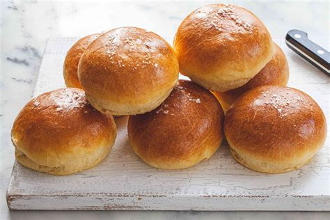

Easy Brioche Buns

Description:
Easy to make brioche buns. Perfect for burgers, breakfast sandwiches, or just a side.
Ingredients:
- 1 cup warm water
- 3 tbsp warm milk
- 2 tsp active dry yeast
- 2 1/2 tbsp sugar
- 2 large eggs
- 3 cups bread flour
- 1/3 cup all-purpose flour
- 1/2 tsp salt
- 2 1/2 tbsp unsalted butter, softened
- sesame seeds (optional)
Preparation:
- Whisk together warm water, warm milk, yeast and sugar. Then, beat 1 egg.
- In the bowl of a stand mixer, add flours, salt and butter.
Using the paddle attachment, mix the ingredients until the butter is the size of crumbs.
- Stir in yeast mixture and beaten egg. Run the mixer on med-low until dough forms, about 5-8 mins.
- Scrape down the sides of the bowl, if necessary, and shape the dough into a ball.
Cover bowl with a damp kitchen towel and let the dough rise until doubled in size, about 1-3 hours at room temp.
- Line a baking sheet with parchment papter. Using a floured dough scraper, divide the dough into 8 equal pieces.
- To shape the dough into balls, gently flatten each piece like a pancake.
Gather the ends and pinch the dough to seal in the center.
Flip the dough over, cup the surface with your palm, and roll into a ball.
Transfer to baking sheet, placing them a few inches apart.
Cover and rest for 1-2 hours, or until puffy and slightly risen.
- To make the egg wash, beat the remaining egg with a splash of water.
When the buns are finished with the second rise, gently brush each one with egg wash.
At this point, you could add sesame seeds to the top of your rolls, if desired.
- Preheat oven to 400 F and place a skillet or baking dish at the bottom of the oven.
Before the dough goes in, add 1/2 cup of water to the skillet to create steam.
This will help keep the bread nice and moist.
Bake for about 15-20 minutes or until golden brown.
Transfer to a wire rack to cool completely.